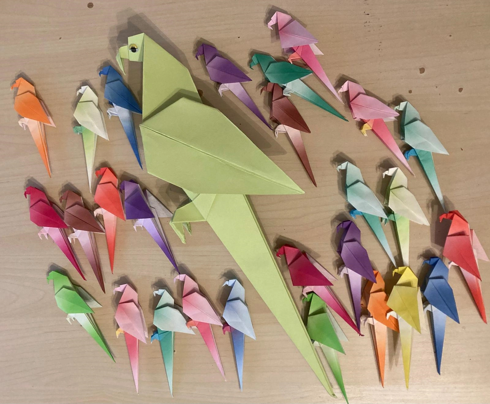
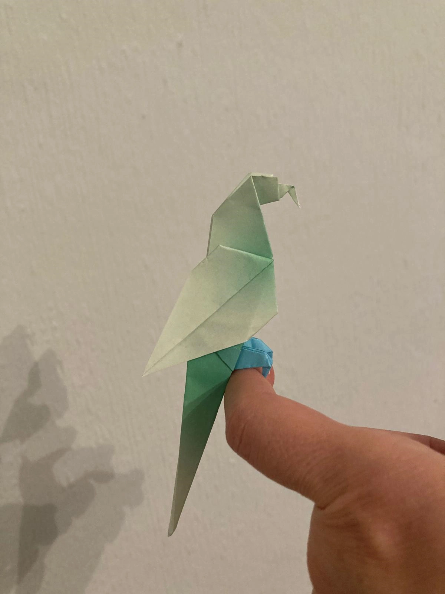
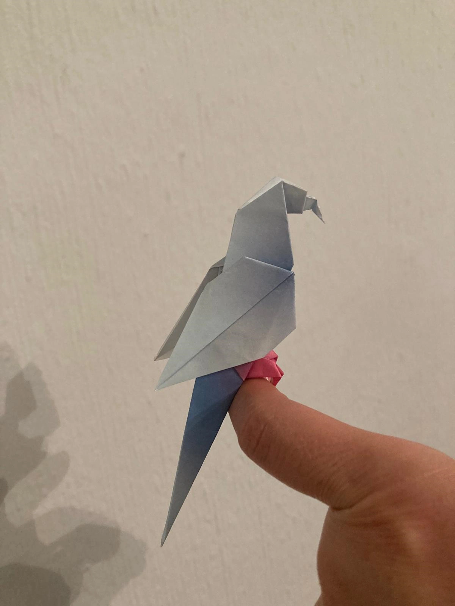
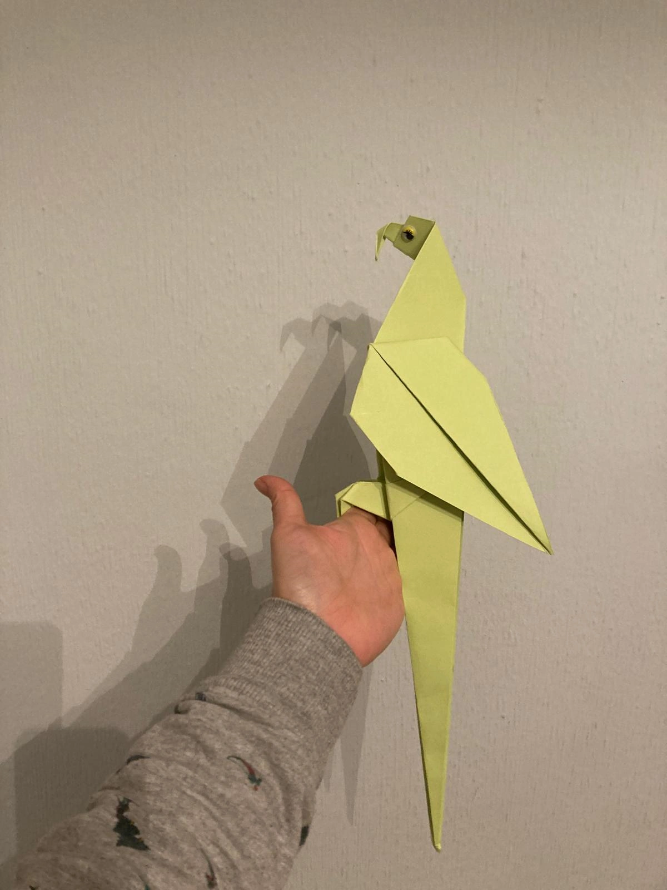

Origami

He dedicado un rato de mi tiempo libre a hacer un loro grande y veintisiete pequeños en origami (papiroflexia).

Hay que agradecer que hayamos nacido en la época de "Youtube sensei", que nos enseña a hacer animales, accesorios, ornamentos, flores, cajas, etc. de Origami.

¿Os gusta el resultado?
